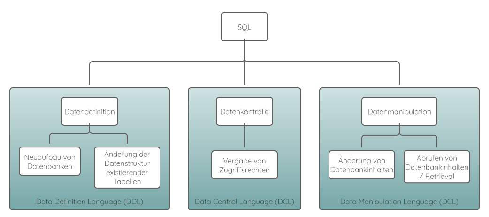

SQL-Grundlagen
SQL ("Structured Query Language") ist eine benutzerorientierte Abfragesprache, die alle
erforderlichen Sprachelemente enthält, um sämtliche Arbeiten, die beim Umgang mit einer relationalen Datenbank anfallen,
auszuführen.
SQL wurde in den 70er Jahren von E.F. Codd konzipiert und 1987 vom Normungsinstitut ISO als Standard
für Datenbanksprachen eingeführt.
Mit SQL ist es möglich folgende Aufgaben auszuführen:
- eine neue Datenbank aufbauen.
- die Struktur einer vorhandenen Datenbank modifizieren.
- die Einstellungen der Systemsicherheit ändern.
- Benutzerberechtigungen für Datenbanken oder Tabellen einrichten.
- den Inhalt einer vorhandenen Datenbank aktualisieren.
- eine Datenbank nach Informationen abfragen.
Die Bezeichnung SQL sollte man nicht auf die Goldwaage legen. Während das S für Structured (=Strukturiert) und L für Language (Sprache) ohne weiteres klar sind, stellt das Q für Query (Abfrage) einen Kompromiss dar. Man könnte annehmen, dass sich SQL aussschliesslich auf die Abfrage von Datenbanken bezieht. Es lassen sich aber, wie oben dargestellt, nicht nur Abfragen ausführen, sondern auch Tabellen erzeugen, Daten hinzufügen, Daten löschen, Daten zusammenführen, Aktionen aufgrund von Änderungen an der Datenbank auslösen und Abfragen innerhalb eines Programms oder der Datenbank speichern. Query steht also stellvertretend für eine ganze Reihe von Funktionen.
Die Möglichkeiten von SQL lassen sich in drei Bereiche einteilen:
